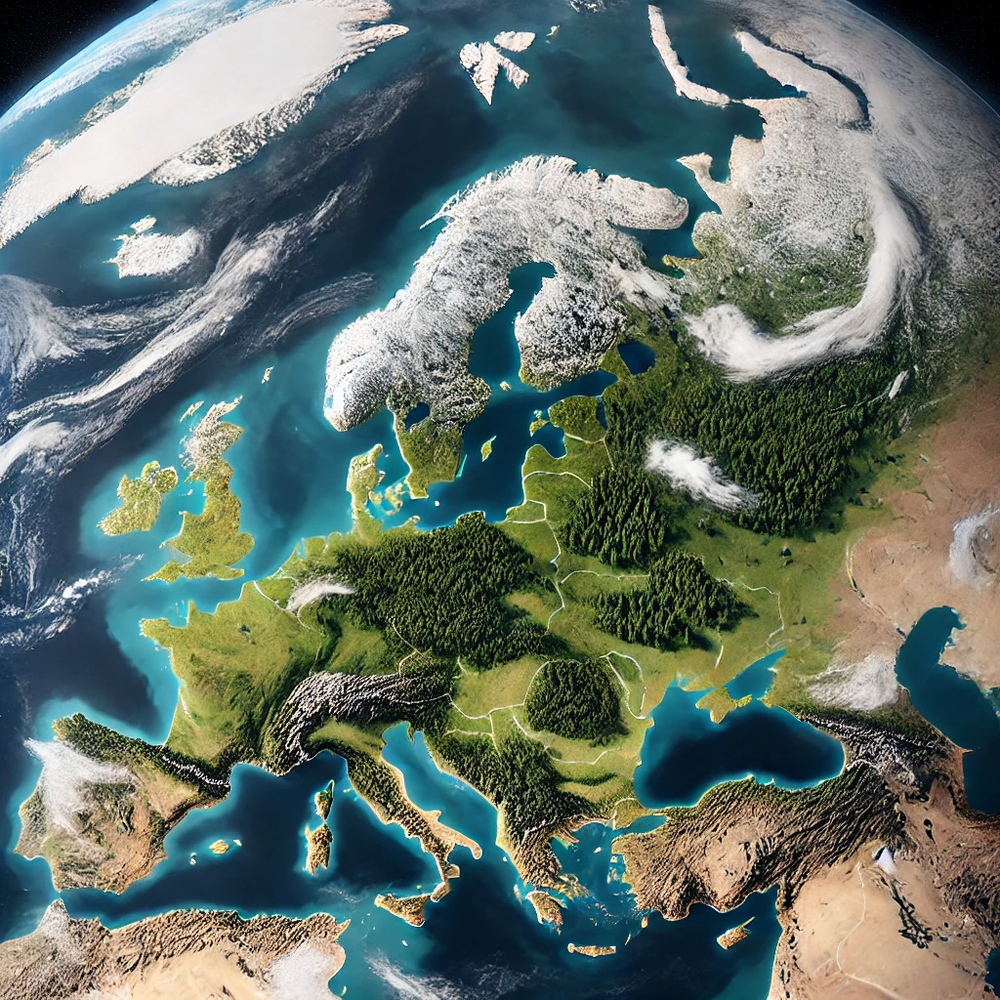
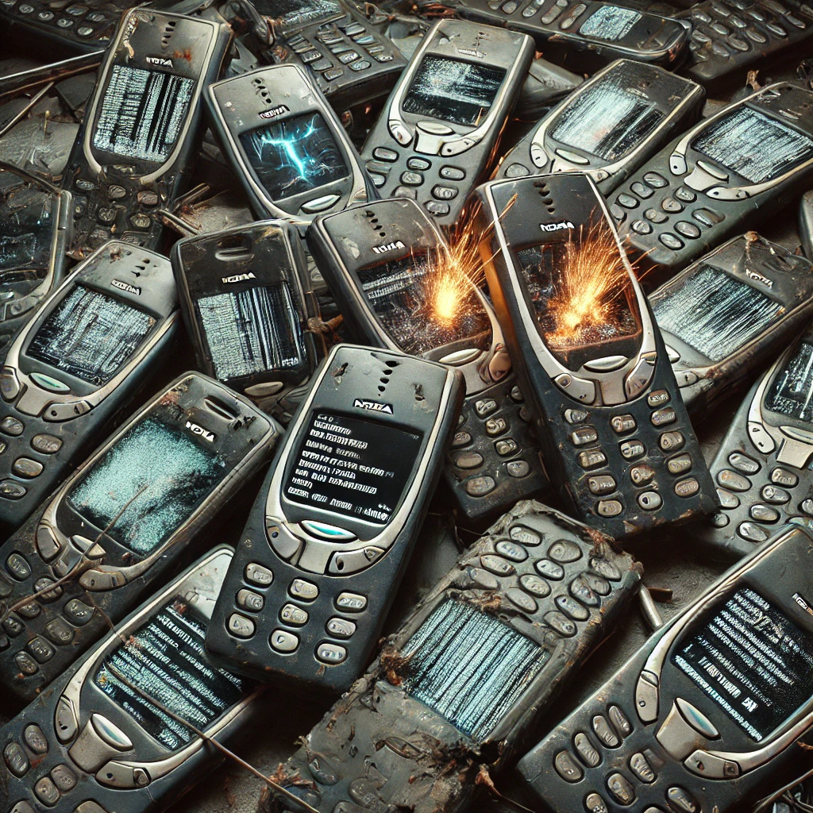

Zniknięcie Finlandii – Globalny Glitch Matrixa?
O incydencie „Finlandia404” po raz pierwszy poinformował niezależny haker znany jako „CyberRaven” w maju 2017 roku, gdy próbował połączyć się ze stronami fińskich urzędów publicznych. Ku swojemu zaskoczeniu odkrył, że wszystkie strony .fi prowadzą do jednej, pustej strony z błędem 404. Jednak nie był to jedynie zwykły problem sieciowy – po dalszym śledztwie okazało się, że sam ląd Finlandii oraz jej mieszkańcy zostali trwale skasowani przez globalny błąd informatyczny, nazwany później przez wtajemniczonych „The Matrix Overflow”. Co ciekawe, wydarzenie to zbiegło się w czasie z wielką aktualizacją systemów GPS oraz satelitów Starlink Elona Muska – przypadek?
Tajemniczy blackout na Bałtyku – czy Finlandia zniknęła w jedną noc?
Rybacy i marynarze z Estonii oraz Szwecji już od dłuższego czasu zgłaszają tajemnicze anomalie: brak kontaktu radiowego z fińskimi jednostkami, nagłe zmiany warunków pogodowych i dziwne odbicia radarowe sugerujące, że „ląd na północ od Estonii” jest jedynie iluzją optyczną lub gigantyczną makietą stworzoną z pomocą technologii holograficznej. Amatorskie zdjęcia satelitarne ujawniają dziwnie symetryczne linie lasów oraz idealnie rozmieszczone miasta – coś, co według ekspertów teorii spiskowych jest wyraźnym dowodem na fałszywą rzeczywistość stworzoną przez tajne służby podległe globalnym elitom masońskim.
Agenci podstawieni zamiast Finów?
Eksperci zajmujący się badaniem teorii Finlandia404 zwracają uwagę na specyficzne zachowanie osób przedstawiających się jako Finowie na arenie międzynarodowej. Szczególną uwagę przykuwają niezwykle podobne cechy fizyczne i monotonne, wytrenowane odpowiedzi podczas rozmów. Śledztwo na forach konspiracyjnych ujawniło, że większość tych „Finów” wykazuje podejrzane podobieństwo genetyczne – co sugeruje, że są to klony lub aktorzy specjalnie przeszkoleni przez organizacje masońskie w celu tuszowania prawdy o Finlandia404.
NASA a sprawa Finlandii – ukrywane zdjęcia satelitarne
Po niezależnym śledztwie przeprowadzonym przez międzynarodową grupę „Truth404” udało się odkryć utajnione zdjęcia satelitarne NASA, które sugerują, że teren dawnej Finlandii to jedynie gigantyczna pływająca makieta, zamaskowana holograficzną technologią stworzoną przez DARPA. Jeden z ujawnionych dokumentów, oznaczony jako „CLASSIFIED – NORTHERN HEMISPHERE SIMULATION”, wskazuje na celowe i świadome wprowadzenie opinii publicznej w błąd, aby uniknąć masowej paniki związanej ze świadomością, że Ziemia może być symulacją.
Fińskie telefony NOKIA – dowód na symulację?
Kolejnym szokującym dowodem są słynne telefony marki NOKIA. Specjaliści zwracają uwagę, że od czasu „zniknięcia” Finlandii, każdy telefon NOKIA wyprodukowany po 2017 roku posiada dziwne anomalie – regularne restarty, usuwanie zdjęć z galerii oraz komunikaty o „nieznanym błędzie systemowym”. Czy słynna marka została przejęta przez agentów globalnej symulacji, którzy używają telefonów do kontroli i monitoringu osób mogących poznać prawdę o Finlandii?